15 травня виповнюється 150 років з дня народження гетьмана Павла Скоропадського – однієї з найбільш знакових постатей українських Визвольних змагань 1917-1921 років.
Сумнівно, що цей ювілей буде належно відзначений. Й причина не лише нинішня гостра фаза російсько-української війни.
Скоропадський українцями належно не поцінований. На це є різні причини. Зокрема, його аристократизм, який ментально не відповідав демократичній (чи навіть – анархічній) вдачі більшості українців. А ще – вал «чорного піару», який забезпечили не лише політичні супротивники гетьмана, що зуміли повалити його владу, але й також більшовики.
І для перших, і для других, які дотримувалися лівих і популістських ідей, правий консерватор Скоропадський був однозначно чужим. Яких йому лише гріхів не приписували!
Мовляв, він був «німецьким запроданцем». Ніби його політичні противники, діячі Української Народної Республіки, та більшовики, що уклали з німцями Брестський мир, такими «запроданцями» не були. І що гетьман разом з німецькими й австрійськими військами тероризували мирне українське населення, передусім селян. Начебто влада Української Народної Республіки (УНР) не вдавалася до насильницьких дій. Про червоний терор годі щось і казати!
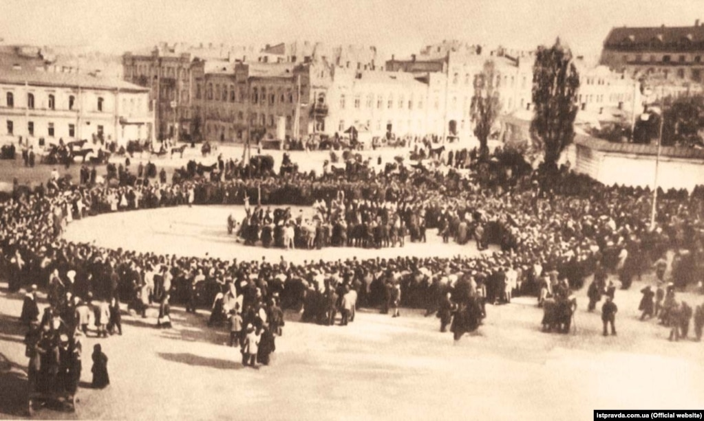Молебень на Софійському майдані в Києві після проголошення Павла Скоропадського гетьманом України, 1918 рік
Звісно, можна говорити про помилки гетьмана Скоропадського. Та слід враховувати, що йому доводилося діяти в непростих умовах.
Іноді Скоропадського порівнюють з Карлом Густавом Маннергеймом – тим паче, що вони служили разом у царській армії й непогано знали один одного.
Однак Маннергейму вдалося стати «батьком» національної Фінської держави – попри те, що він не був фіном, а русифікованим шведом. А ось русифікованому українцю Скоропадському не вдалося розбудувати Українську національну державу.
І питання не в тому, що Маннергейм був більш талановитий, ніж Скоропадський. За великим рахунком, таланти одного й другого, як військових, адміністраторів, були співмірними. І не питання, що Маннергейму й Скоропадському довелося розбудовувати «свої» держави в різних умовах. Захопити Фінляндію більшовики були не менш зацікавлені, ніж захопити Україну.
Питання, як видається, у ментальних відмінностях між фінами й українцями. Якщо перші більш спокійні, готові змиритися з непростими обставинами й працювати на результат, то українці – «гарячі»: їм все подавай відразу.
Зрештою, фіни, маючи автономію в складі Російської імперії, все ж мали певний державницький досвід – чого не скажеш про українців. Фіни загалом прийняли консерватора Маннергейма, а українцям консерватор Скоропадський не був потрібен. Їм більше подобалися різного роду ліві, в т. ч. більшовики, які годували народ популізмом – обіцянками наділити селян землею, віддати фабрики й заводи робітникам тощо.
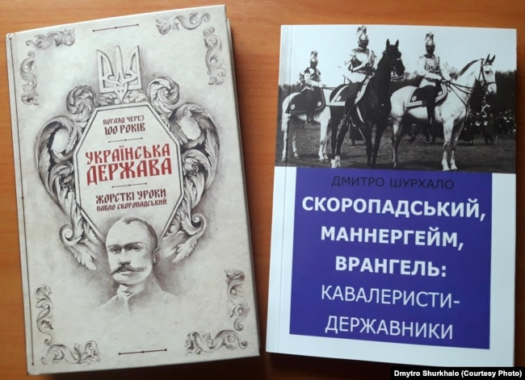Павло Скоропадський, як відомо, належав до російської імперської аристократії. Хоча його родина мала українське козацьке походження, але в його сім’ї «перемішалася кров» представників різних національностей. Це, власне, було притаманне багатьом аристократичним родинам Російської імперії. Народився, до речі, Скоропадський в Німеччині, у Вісбадені. Першою мовою, якою він оволодів, була німецька. Знання цієї мови, німецького життя в подальшому чимало допомогли йому.
Дитинство Скоропадського пройшло на Чернігівщині. Навчався у гімназії в Стародубі. У молоді роки роки майбутній гетьман познайомився з «українською старовиною», зацікавився історією та культурою України.
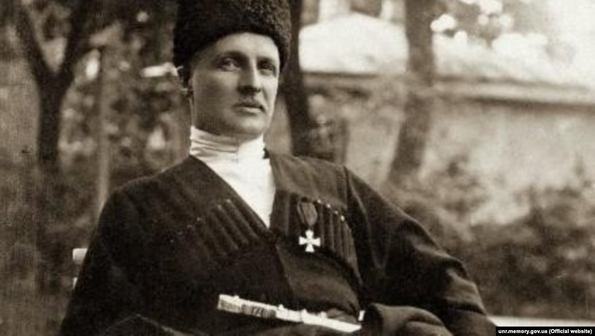Павло Скоропадський, гетьман Української Держави (29 квітня – 14 грудня 1918)
Однак політично Скоропадський був лояльним підданим Російської імперії, вважаючи себе людиною російської культури. Адже належність до російського аристократичного середовища, навчання в російських навчальних закладах, зрештою, служба в російській армії зробили свою справу.
Власне, Скоропадський належав до «типових малоросіян». Таких було чимало. Вони непогано вписалися в російські імперські реалії, займаючи високі становища в державі. З часом це малоросійство зіграло із Скоропадським злий жарт. Він не симпатизував українському національному рухові. Особливо негативно ставився до проукраїнськи налаштованих галичан.
Останніх навіть вважав окремим народом, відмінним від «справжніх українців». Гетьман так і не зміг «переступити через своє малоросійство» й порозумітися з діячами українського національного руху. Це стало не останньою причиною його падіння.
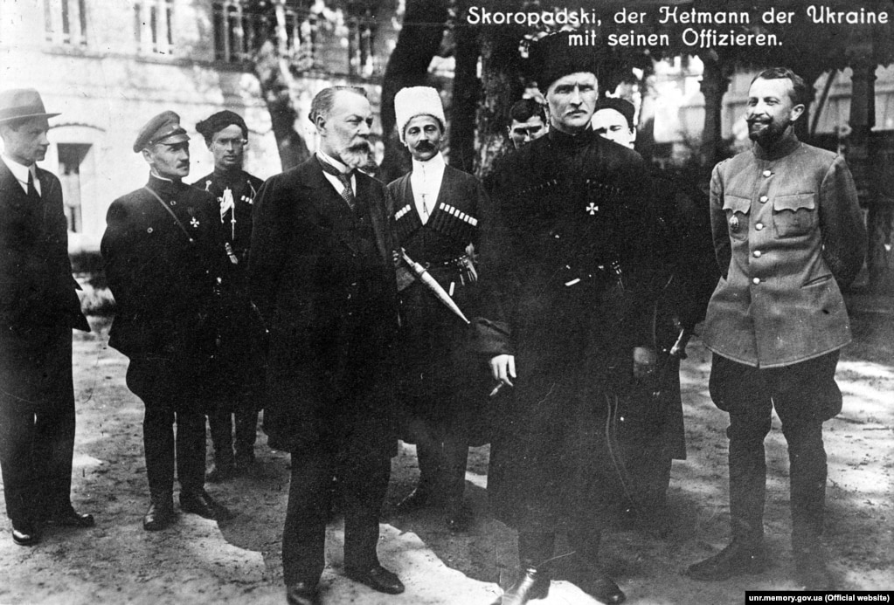Гетьман Павло Скоропадський (у чорній шапці) із прем’єр-міністром Федором Лизогубом та офіцерами. В центрі ад’ютант О. Сахно-Устимович. Київ, 1918 рік
Та попри те, в умовах розвалу Російської імперії Скоропадський зробив вибір на користь України. Він, будучи заможною людиною й маючи зв’язки, міг би виїхати за кордон і безбідно там жити. Однак вирішив лишитися на землі своїх предків і в доволі складний час не побоявся стати на чолі Української держави, сподіваючись, переборовши розруху й анархію, перетворити її в життєздатний організм. Але не так багато часу було відпущено йому…
Можна зустріти думку, що Скоропадський прийшов до влади з допомогою німецьких окупаційних сил, які знаходилися в Україні, організувавши державний переворот 29 квітня 1918 р. У цьому є частка правди, але не вся правда.
Пригадаймо, що німецькі й австрійські війська в Україну запросив не Скоропадський, а лідери УНР на чолі з Михайлом Грушевським, які не могли справитися з більшовицькою експансією. Здавалося, під захистом іноземних військ вони отримали шанс у відносно спокійних умовах розбудовувати державні структури.
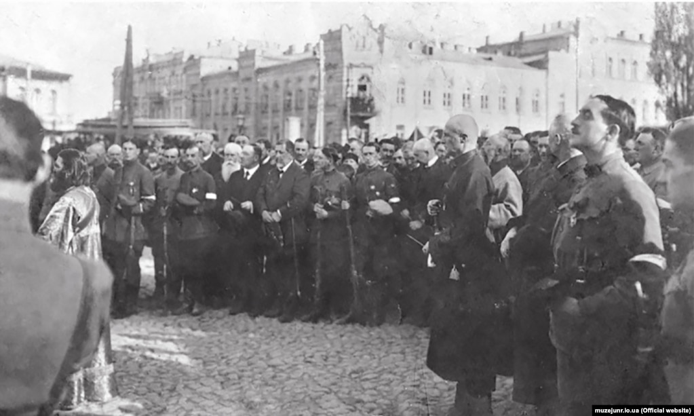Проголошений гетьманом генерал Павло Скоропадський (в центрі у чорній черкесці) серед своїх прихильників на урочистому молебні на Софійській площі. 29 квітня 1918 року
Проте керівництво УНР взялося за звичне для них діло – затіяли міжпартійну боротьбу. І часто не виконувало зобов'язань перед своїми союзниками, зокрема по поставкам продовольства – що особливо важливим було для німців та австрійців. У такій ситуації ті почали шукати людей, які змогли б очолити Україну й діяти ефективно. Пропозиції було зроблено кільком діячам. Однак більшість з них відмовилася, розуміючи, яка «ноша» чекає на них.
Павло Скоропадський погодився. Чому? У своїх споминах він це пояснив так: «…коли б не було мого виступу, німці кілька тижнів пізніше завели б в Україні звичайне генерал-губернаторство. Воно було б оперте на загальних основах окупації і нічого спільного з українством не мало». Чи змальовував Скоропадський реальний стан справ, пишучи ці слова? Схоже, так. Принаймні до цього йшло.
Варто зазначити, що гетьманський переворот був, фактично, безкровним. Реально ніхто не збирався захищати тодішнє керівництво УНР. Німецькі війська (принаймні на позір) в події не втручалися. Цей переворот мав і певну легітимність. Адже Скоропадського обрали гетьманом на т. зв. Хліборобському конгресі, що відбувся в Києві 29 квітня 1918 р. На ньому були присутні 6432 делегати від восьми українських губерній. Звісно, можна піддавати сумніву правомочність такого обрання. Але ж Центральну Раду, яка здійснювала керівництво УНР, обрали на подібному зібранні – до того ж не такому масштабному. Мається на увазі Національний конгрес, що відбувався в Києві у квітні 1917 р. На цьому зібранні знаходилося близько 1000 делегатів, що представляли не всі області України. Таким чином, обрання Скоропадського гетьманом в тодішніх умовах виглядає достатньо легітимно.
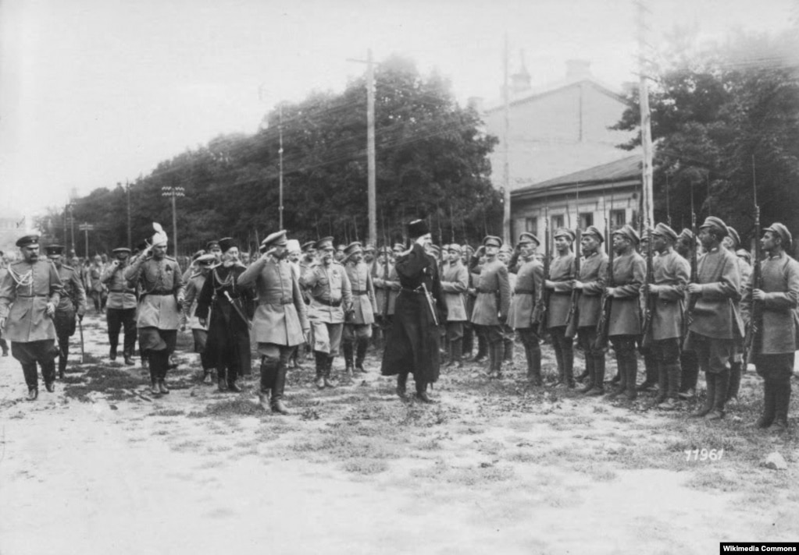Павел Скоропадский оглядає Сіро-жупанну дивізію
Навіть противники Скоропадського змушені були визнати, що в часи гетьманату Україна стала островом стабільності на розбурханих революцією теренах колишньої Російської імперії. В Українській державі була встановлена стабільна валюта й розроблена податкова система. Був прийнятий і виконувався державний бюджет. Також були створені Державний та Земельний банки. Відносно непогано працювала залізниця – чого не скажеш про російські регіони. А в той час саме залізничний транспорт був одним із головних засобів комунікації.
Здійснювалася політика м'якої українізації. Було відкрито близько сотні українських гімназій, відбулося введення до навчальних програм української мови, історії та географії як обов'язкових предметів. Відкриті були українські державні університети в Києві та Кам'янці-Подільському, історико-філологічний факультет у Полтаві, створені Державний український архів, Національна галерея мистецтв, Український Історичний музей, Українська національна бібліотека, Український театр драми і опери, Українська державна капела, Український симфонічний оркестр, Українська академія наук тощо.
Гетьманат прагнув розширення держави за рахунок українських етнічних земель, а також важливих для держави територій. На півночі до його складу були інкорпоровані Пінський, Мозирський і Річицький повіти, де проживало змішане українське й білоруське населення. Суверенітет Української держави поширювався на Холмщину й Підляшшя, де існувала Холмська губернія. Робилися кроки по приєднанню Кубані, українських повітів Бессарабії (Хотинського, Акерманського та Ізмаїльського), а також українських етнічних територій, що належали Війську Донському. У результаті економічної блокади Криму в серпня 1918 р. цей півострів став частиною Української держави. Українською стала значна частина чорноморського флоту.
Україну визнали 30 держав. У Києві були розташовувалися постійні представництва десяти з них. Гетьманат мав дипломатичні місії в двадцяти трьох країнах. У червні 1918 р. був укладений мирний договір з російськими більшовиками, в результаті чого припинилися широкомасштабні воєнні дії.
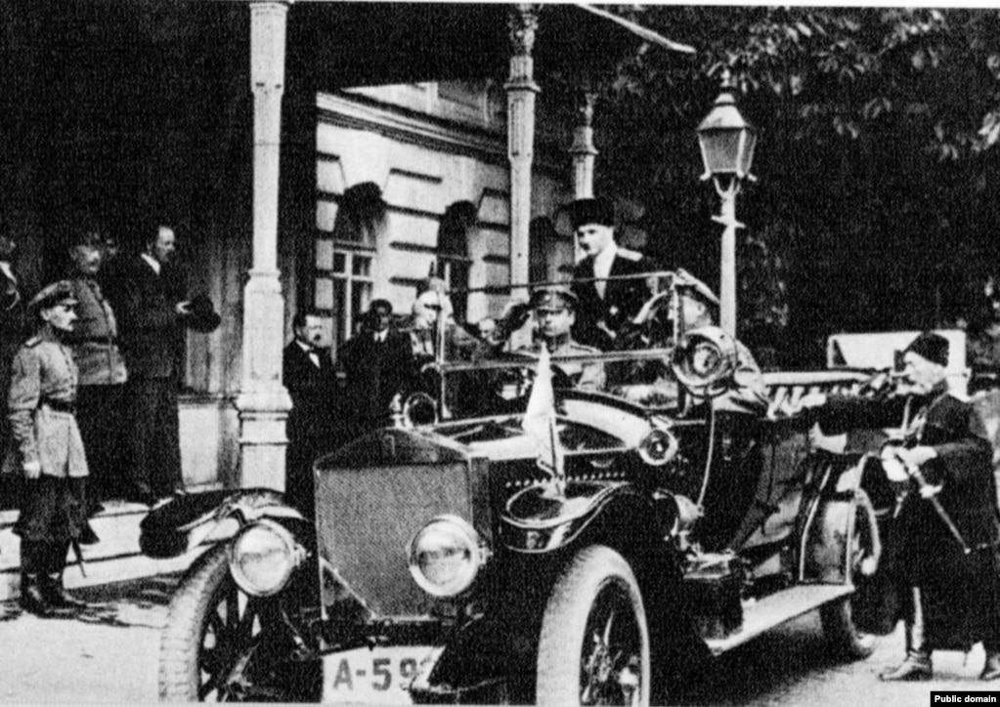Гетьман Петро Скоропадський сідає до авто. Літо-осінь 1918 року
Здавалося, населення мало би бути задоволеним. Однак за стабільність і відносне благополуччя треба було платити. Демократичні свободи були згорнуті, скасовувався восьмигодинний робочий день, захоплені поміщицькі землі були відібрані в селян. Передбачалася аграрна реформа й наділення селян землею – але за викуп. А хто ж хотів отримувати землю за викуп, коли її можна було взяти просто так!
Звісно, соціальна політика гетьмана породжувала невдоволення серед широких верств. До того ж українські політичні сили, що, як правило, мали ліве спрямування, були незадоволені кадровою політикою гетьмана, який робив ставку на спеціалістів, часто проросійськи налаштовані. Здебільшого, це були люди, які мали українське походження, певні симпатії до українських традицій, але політично й культурно тяжіли до росіян. Також росіян Скоропадський широко залучав до державного будівництва.
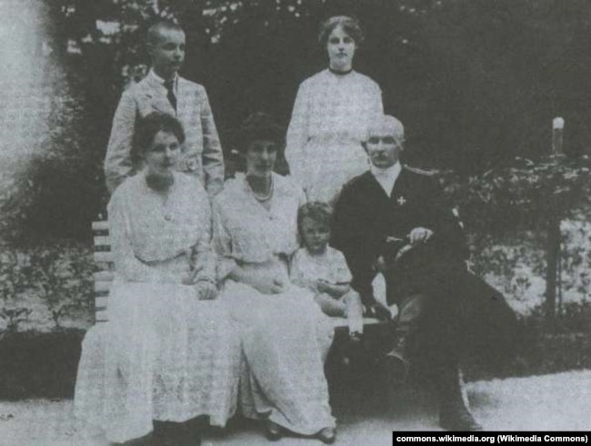Родина Скоропадських. 1920 рік
На початку серпня 1918 р. українські політичні партії і громадські організації створили Український національний союз (УНС), який проголосив своєю метою утворення суверенної демократичної Української держави парламентського типу. Ця організація погодилася визнати гетьмана очільником держави, але вимагала створення за своєї участі нового уряду та обрання на Всеукраїнському конгресі державної ради з функціями вищої законодавчої влади.
Скоропадський змушений був піти на співпрацю із УНС. Це йому рекомендували представники німецької влади. Однак повноцінного співробітництва так і не відбулося. Не будемо розбиратися, хто був тут більше винуватий. Але це непорозуміння дорого коштувало для України.
13 листопада 1918 р. гетьман підготував, а наступного дня видав грамоту «До всіх українських громадян», де йшлося про федерацію Української держави з небільшовицькою Росією. Скоропадський сподівався отримати підтримку Антанти, ка була за «єдину й неділиму», а також хотів уникнути конфліктів з білогвардійцями, котрі, саме завдячуючи Антанті, набирали сили. Того ж дня, 13 листопада, на засіданні УНС було сформовано Директорію на чолі з Володимиром Винниченком. Після оголошення згаданої грамоти Директорія почала повстання. Здавалось би, вказаний документ спровокував виступ проти гетьмана. Це не зовсім так. Повстання лівими готувалося заздалегідь. І здійснювалося це не без підтримки більшовиків.
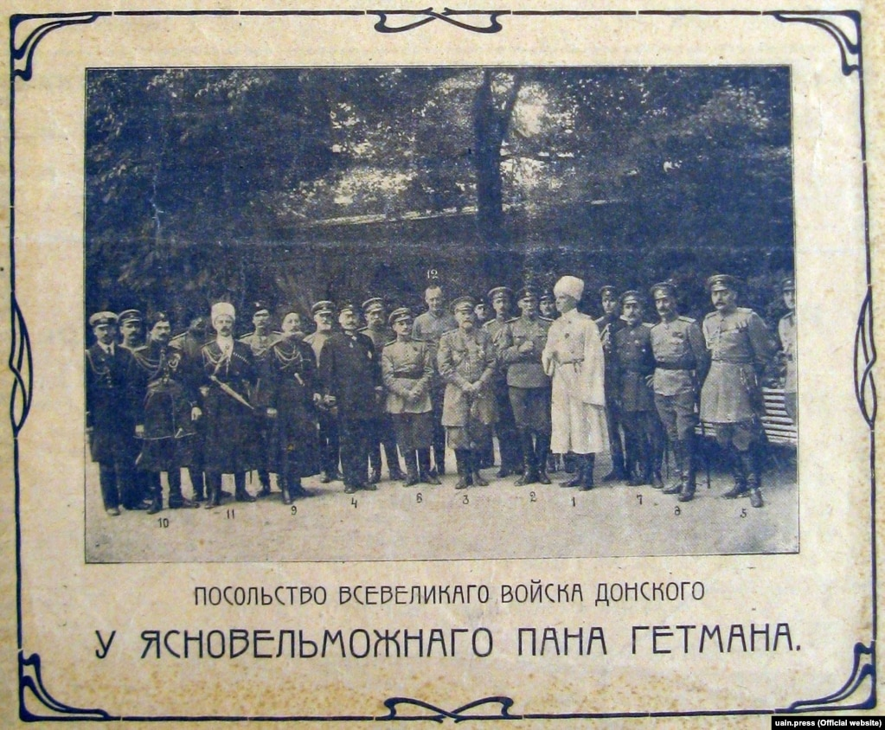Під час зустрічі представників Української Держави і Всевеликого Війська Донського. Київ, 1918 рік
Повстання, очолюване Директорією, перемогло. 14 грудня 1918 р. Скоропадський зрікся влади. Спроба побудувати сильну й впорядковану державу, яка б нагадувала держави Західної Європи, закінчилась крахом. При владі опинилися ліві популісти, яких у країнах Антанти сприймали майже як більшовиків. Відповідно, країни, що вийшли переможцями в Першій світовій війні, вирішили не надавати допомогу Україні – на відміну від Польщі й деяких інших країн, що з’явилися в той час. Зрештою, Українська Народна Республіка, очолювана Директорією, зазнала краху.
Скоропадський, будучи освіченою й проникливою людиною, передбачав це – як і подальший трагічний хід розвитку України. Він писав: «Я не сумніваюся, як і не сумнівався раніше, що всілякі соціалістичні експерименти, якби у нас уряд був соціалістичним, привели б негайно до того, що вся країна в 6 тижнів стала б здобиччю всепожираючого молоха-більшовизму. Більшовизм, знищивши всяку культуру, перетворив би нашу чудову країну на висохлу рівнину, де з часом усівся би капіталізм, але який!.. Не той слабкий, м’якотілий, що тлів у нас досі, а всесильний бог, у ногах якого буде валятись і плазувати той самий народ».
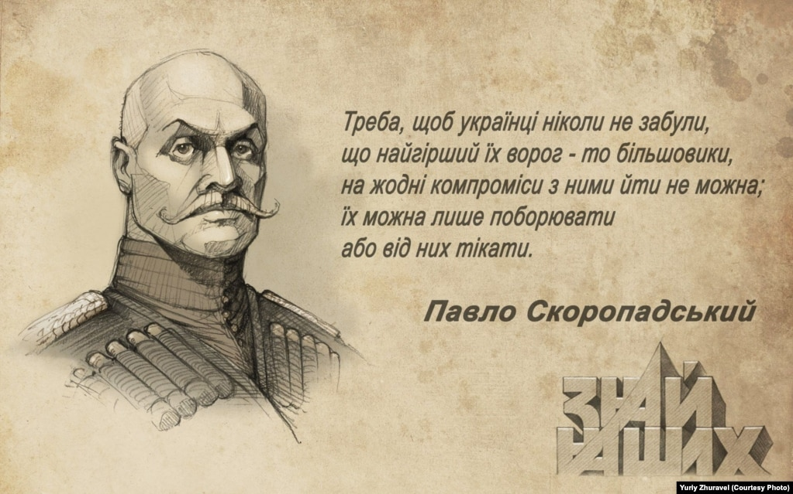Малюнок художника Юрія Журавля
Після зречення влади Скоропадський опинився в еміграції в Німеччині. Будучи емігрантом, він очолив гетьманський рух, який сприяв поширенню ідей консерватизму в українському середовищі. Одним з провідних теоретиків цього руху став В’ячеслав Липинський, погляди якого справили значний вплив на українських емігрантів у міжвоєнний період. Скоропадський посприяв заснуванню в 1926 року Українського наукового інституту при Берлінському університеті, який відіграв помітну роль у розвитку української науки й культури.
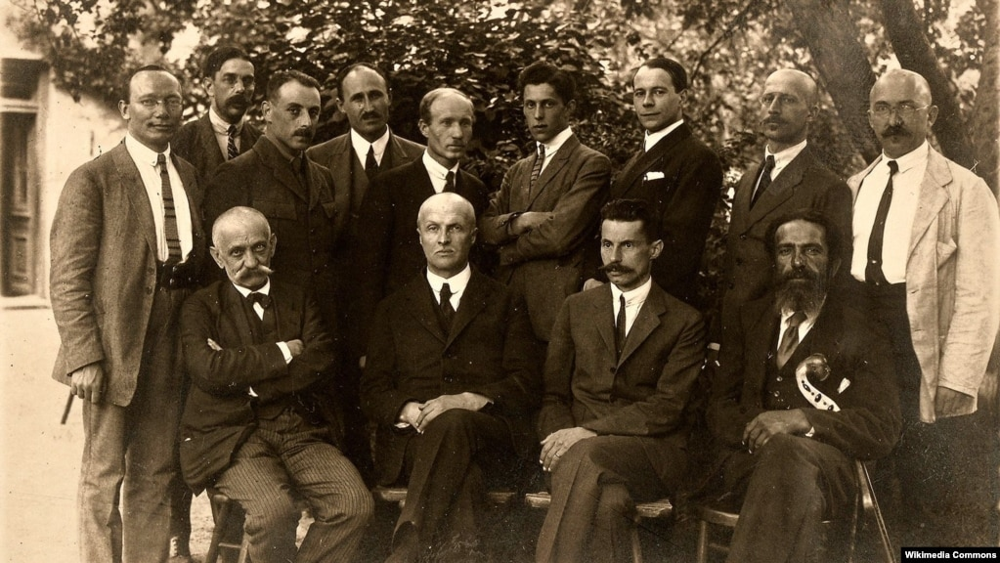Учасники установчого з'їзду Українського союзу хліборобів-державників. Рейхенау, 4–8 червня 1922 року. Зліва направо сидять: Іван Леонтович, гетьман Павло Скоропадський, В'ячеслав Липинський, Людвіг Сідлецький; стоять Михайло Тимофіїв, Микола Кочубей, Адам Монтрезор, Андрій Білопольський, Михайло Савур-Ципріянович, Ігор Лоський, Володимир Залозецький, Сергій Шемет, Олександр Скоропис-Йолтуховський
Маючи критичне наставлення до влади нацистів, колишній гетьман все ж волів залишатися в Німеччині й захищати тут інтереси українців. Так, коли угорські війська з санкції гітлерівців окупували в 1939 році Карпатську Україну, він виступив у оборону її незалежності. Також заходам Павла Скоропадського завдячують звільненням з німецьких концтаборів Степан Бандера, Андрій Мельник, Ярослав Стецько та інші.
Помер Скоропадський 26 квітня 1945 року далеко від України, на німецькій землі, у Баварії, де він був важко поранений під час авіаційного нальоту.
Видається важливим, щоб українці, які зараз заявляють про своє прагнення жити в «європейському домі», осмислили й належно оцінили спадок гетьмана Скоропадського.
Адже ця людина прагнула побудувати Українську державу за європейським зразком.
Петро Кралюк – професор, голова Вченої ради Національного університету «Острозька академія»
Думки, висловлені в рубриці «Точка зору», передають погляди самих авторів і не конче відображають позицію Радіо Свобода
Ссылка на первоисточник